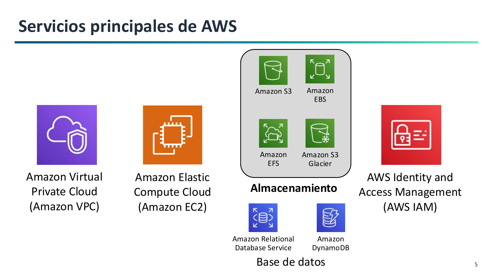
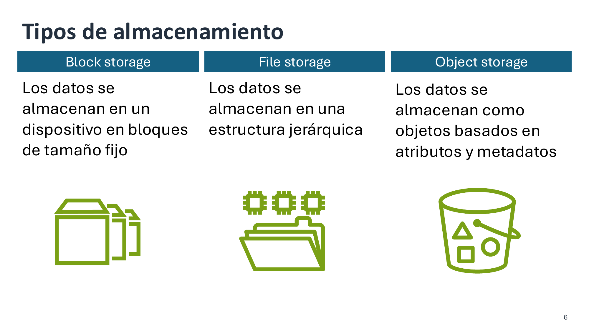
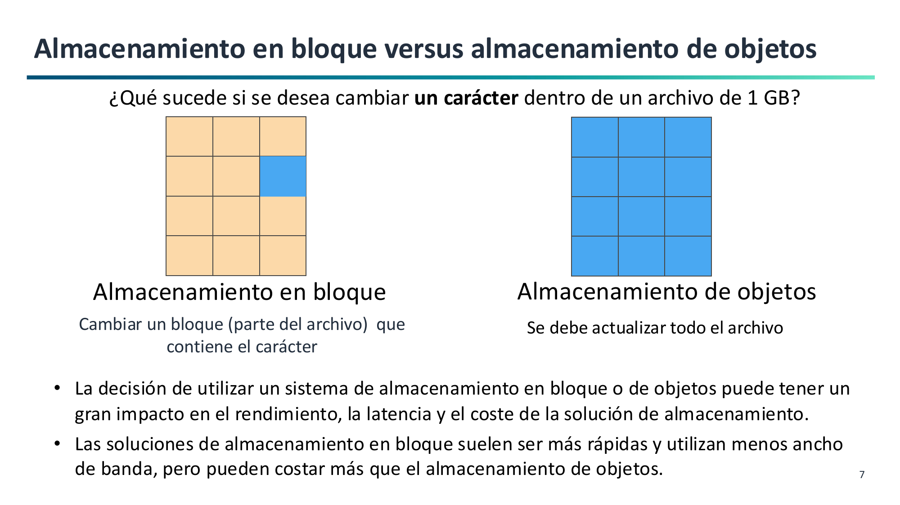

1. Introducción al Almacenamiento en la Nube y Almacenamiento de Objetos¶
El almacenamiento es uno de los pilares esenciales de la nube, junto con el cómputo y las redes. Seleccionar el tipo de almacenamiento adecuado según requisitos de durabilidad, coste, latencia y patrones de acceso es el objetivo principal del Resultado de Aprendizaje 1 (RA1).
El Ecosistema de Servicios de AWS¶
Dentro del mapa global de servicios de Amazon Web Services, el almacenamiento interactúa de forma constante con los servicios de cómputo, redes, bases de datos y seguridad:

- Cómputo: Instancias virtuales (Amazon EC2) y funciones sin servidor (AWS Lambda).
- Redes: Aislamiento y control de tráfico con Amazon Virtual Private Cloud (VPC).
- Seguridad: Control granular de identidades, usuarios y roles mediante AWS Identity and Access Management (IAM).
- Bases de datos: Servicios relacionales (Amazon RDS) y clave-valor (Amazon DynamoDB).
- Almacenamiento: Soluciones en bloque (EBS), archivos en red (EFS) y objetos (S3 y Glacier).
Tipos de Almacenamiento en la Nube¶
AWS clasifica el almacenamiento en tres modelos arquitectónicos bien diferenciados:

-
Almacenamiento en Bloque (Amazon EBS):
- Expone volúmenes de disco crudos divididos en bloques de tamaño fijo (ej. 4 KB).
- El sistema operativo anfitrión le da formato (
ext4,xfs,NTFS). - Muy baja latencia (sub-milisegundo), conectado directamente a una instancia EC2.
- Caso típico: Discos de sistema operativo y bases de datos transaccionales (OLTP).
-
Almacenamiento de Ficheros (Amazon EFS / Amazon FSx):
- Sistema jerárquico tradicional de carpetas y ficheros.
- Se monta en red mediante protocolos estándar (NFSv4 para Linux o SMB para Windows).
- Acceso concurrente de cientos de máquinas a los mismos archivos.
- Caso típico: Servidores de ficheros corporativos y sistemas CMS compartidos.
-
Almacenamiento de Objetos (Amazon S3):
- Repositorio plano (flat namespace) donde los datos se almacenan como objetos.
- Cada objeto tiene sus datos binarios (payload), una clave única (Key) y metadatos descriptivos.
- Acceso universal mediante API REST sobre HTTP/HTTPS.
- Caso típico: Copias de seguridad, lagos de datos (Data Lakes), sitios web estáticos y ficheros multimedia.
¿Cómo entender la diferencia entre ficheros y objetos?
- Un sistema de archivos tradicional es como un archivador de oficina con carpetas y subcarpetas: para encontrar un papel necesitas la ruta jerárquica exacta (
/año/mes/factura.pdf). Si alguien renombra una carpeta intermedia, se rompen los enlaces. - Un almacén de objetos como S3 funciona como el guardarropa de un teatro: entregas tu abrigo (los datos), le colocan una etiqueta con metadatos (color, propietario) y te entregan una ficha única (la clave o ID). No necesitas saber en qué percha física cuelgan tu abrigo; al presentar tu ficha, te devuelven el objeto exacto de forma instantánea.
Comparativa Técnica¶
| Característica | Bloque (EBS) | Ficheros (EFS / FSx) | Objetos (S3) |
|---|---|---|---|
| Unidad mínima | Bloque de tamaño fijo | Fichero en árbol jerárquico | Objeto discreto (Datos + Metadatos) |
| Identificador | Dirección lógica (LBA) | Ruta jerárquica (/var/log/...) |
Clave única dentro del bucket (URI) |
| Protocolo | NVMe / iSCSI / canal local | NFS / SMB en red | API REST (HTTP / HTTPS) |
| Latencia | Sub-milisegundo | Pocos milisegundos | Decenas de milisegundos |
| Escalabilidad | Hasta el tamaño del volumen | Elástica (Petabytes) | Prácticamente ilimitada |
| Coste por GB | Alto | Medio-Alto | Muy bajo |
| Modificación parcial | Sí (sobrescribe sectores) | Sí (modifica bytes) | No (reescritura completa) |
Casos de Uso del Almacenamiento en AWS¶
Una regla práctica para elegir el servicio idóneo según la necesidad del proyecto:
| Si tu proyecto necesita... | Piensa en utilizar... |
|---|---|
| Almacenamiento de disco rápido y persistente para instancias EC2 o bases de datos relacionales | Amazon Elastic Block Store (Amazon EBS) |
| Una plataforma elástica, duradera y de bajo coste accesible vía web para backups, web estática o multimedia | Amazon Simple Storage Service (Amazon S3) |
| Archivado a muy largo plazo y custodia legal con el coste más bajo posible | Amazon S3 Glacier |
| Un sistema de ficheros compartido accesible por múltiples servidores Linux mediante red NFS | Amazon Elastic File System (Amazon EFS) |
El Principio de Inmutabilidad en Objetos¶
Los objetos en Amazon S3 son tratados como entidades atómicas e inmutables:

¿Qué ocurre al modificar un único carácter en un archivo de 1 GB?
- En Bloque (EBS): El sistema operativo solo sobrescribe el bloque de 4 KB donde está ese carácter. El resto de bloques no se tocan.
- En Objetos (S3): No se puede modificar un byte in-place. Es necesario volver a subir el archivo completo de 1 GB, reemplazando la versión anterior.
Por este motivo, S3 está optimizado para el patrón WORM (Write Once, Read Many): escribir una vez y leer millones de veces.